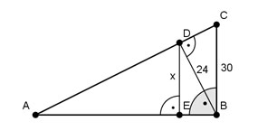

Pythagoras Aufgabe 83 Berechnen Sie die Länge der Strecke x in mm. Alle Maße in mm.  Satz von Pythagoras im Dreieck DBC BC² = BD² + DC² | -BD² DC² = BC² - BD² DC² = 30² mm² - 24² mm² = 324 mm² |√ DC = 18 mm Höhensatz im Dreieck ABC: BD² = AD * DC |:DC BD² AD = ----- DC 24² AD = ----- 18 AD = 32 mm Satz von Pythagoras im Dreieck ABD: AB² = BD² + AD² AB² = 24² mm² + 32² mm² = 1 600 mm² |√ AB = 40 mm Kathetensatz im Dreieck ABD: BD² = AB * EB | :AB BD² EB = ----- AB 24² EB = ----- 40 EB = 14,4 mm Satz von Pythagoras im Dreieck EBD: ED² = x² + EB² |-EB² x² = ED² - EB² x² = 24² mm² - 14,4² mm² = 368,6 mm² |√ x = 19,2 mm